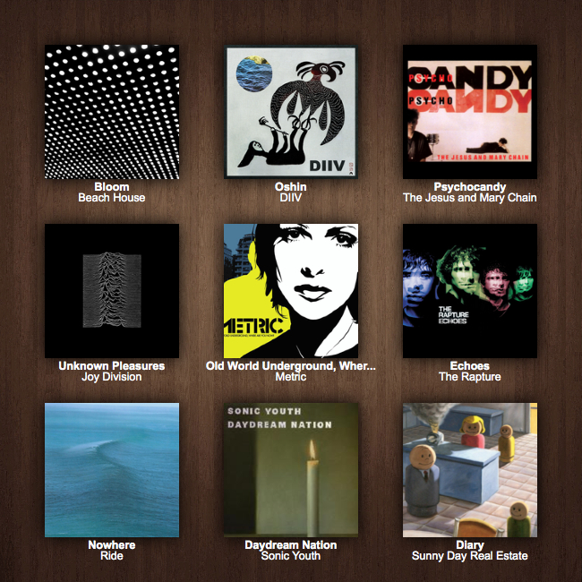

This week I finally went through a large portion of all the albums on my “to-listen” list. These are the ones I’m currently enjoying. Interestingly enough, seven of the nine albums are debuts.

Beach House - Bloom: This is a great album that took me a few listens to get in to. It’s not groundbreaking, but it’s incredible high-quality and accessible dream pop. Good for sunrises, sunsets, and dusk.
DIIV - Oshin: Maybe the best way to describe this album is a rainy day at the beach. Great dreamy jam sound, reminiscient of Real Estate. “Doused” is a standout.
The Jesus and Mary Chain - Psychocandy: Slacker shoegaze, or shoegaze before there was shoegaze. The JAMC’s noisy guitars and airy vocals paved the way for My Bloody Valentine just three years later. And they didn’t care. This is some of the catchiest and most indifferent noise you can get.
Joy Division - Unknown Pleasures: One of the best post-punk albums. Ian Curtis’ baritone matches perfectly with the themes of isolation prevalent in his lyrics. The guitar and bass propell the songs through they airy abyss created by the drums. I’m going to listen to the follow-up Closer soon.
Metric - Old World Underground, Where Are You Now?: Metric’s debut album. It sounds a lot different from their later work, but it has a good punk vibe. Creates a unique nervous atmosphere. I think it’s about robots.
The Rapture - Echoes: One of the first true dance-punk albums. The Rapture also experiment with modern indie rock. Highlights include the Strokes-esque title track and lead single “House of Jealous Lovers.” Definitely check this out if you’re into dance-punk or early 2000s garage rock.
Ride - Nowhere: This album is possibly the best that shoegaze has to offer outside of My Bloody Valentine. Opener “Seagull” is iconic, and the other tracks that fill out the album’s short 39-minute runtime are almost as good. More accessible than some of the other popular shoegaze albums.
Sonic Youth - Daydream Nation: “Teen Age Riot” is a masterpiece, the best track on what most say is Sonic Youth’s best work. The album perfectly balances noise and rock, creating a unique sound that new indie acts are still trying to emulate.
Sunny Day Real Estate - Diary: A definitive emo album. Not to be confused with A Sunny Day In Glasgow. Great guitar and vocal work. If you like “In Circles,” you’ll like the album. Perfect for warm summer night listening.